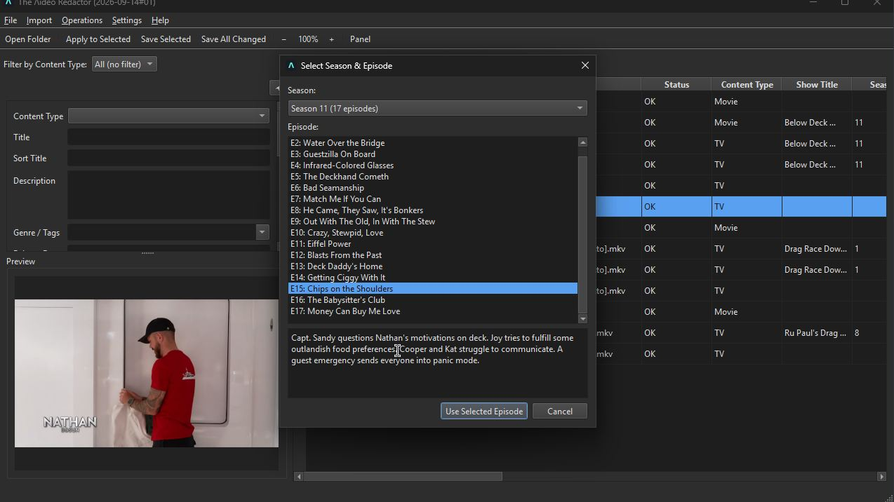

The Ʌideo Redactor
A free bulk metadata editor for MKV and MP4 video files — movies, TV, music videos, and everything else in a mixed library.

What it does
Built for people managing a mixed library of movies, TV episodes, music videos, and oddball clips who want mp3tag-style batch editing instead of clicking into files one at a time.
Features
- Bulk-edit metadata across MP4 and MKV files from one panel: title, description, genre, cast, director, season/episode numbering, and more — with a Content Type filter (Movie / TV / Music Video / Clip / Misc) that shows only the fields relevant to your selection.
- TMDB lookup — search and match a file against The Movie Database, pulling in cast, crew, synopsis, and poster art. Every match is confirmed by hand; nothing is auto-applied.
- Season & episode picker for TV — pick the exact episode after matching a show, so per-episode titles and air dates land correctly.
- Subtitle fetching via OpenSubtitles, hash-matched against the exact file first (guaranteed sync), with a title-search fallback clearly flagged as sync-not-guaranteed.
- Remux to MP4 for MKV files — a fast, lossless container swap, not a re-encode.
- Poster art saved as a sidecar image, the convention Plex/Jellyfin/Kodi already expect, plus a thumbnail preview pulled from a real frame of the video.
Design principles
Never write metadata you didn't confirm — TMDB and subtitle matches always go through a picker, never an auto-applied "confident" guess. A file that can't load, save, or match shows a clear error instead of being silently skipped. Metadata reads/writes go through mutagen and mkvpropedit/mkvmerge rather than reimplementing container formats by hand.
Requirements
Windows, no separate Python install needed. Remuxing and thumbnail extraction need ffmpeg; MKV metadata read/write needs MKVToolNix — the app warns on first launch if either is missing from PATH. Full details and the changelog are in the GitHub repository.
The rest of the family
The Ʌideo Redactor shares its UI and core editing patterns with three sibling tools, via redactor_common:
 The ƆBZ Redactor
The ƆBZ Redactor The ƎPUB Redactor
The ƎPUB Redactor The ɯP3 Redactor
The ɯP3 Redactor